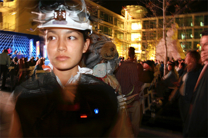

Day: Wednesday
Time: 9:30PM - midnight
Location: Martin Luther King, Jr. branch San Jose Public Library, 4th & San Fernando
Ticket Price: FREE and open to the public
Performance Duration: ongoing during that time period (2.5 hours)

SPECFLIC 2.0 is a performative media event set in 2030. Taking place in and around the Martin Luther King, Jr. Main Public Library, San Jose, CA http://www.sjlibrary.org, SPECFLIC is distributed cinema; a "story-event" created by layering different media forms (including large projections on iconic public buildings, cell phone cameras & SMS, live performance and radio).
SPECFLIC 2.0 portrays characters in a future library in simultaneous story-layers that provoke the audience to consider the future of reading, writing, the book object and storytelling. The main story frame represents a near-future 2030 world in which audio-visual media dominate, even as written communication and reading retain important, though narrow functions. The factorial explosion of information and information flows has catalyzed new forms of categorization of material and the next generation of students and scholars is developing within this constantly reconfigure-able info-sphere. Hierarchies of access and control of information are taken for granted, and while the public library has a function, it is quite different from the lending library of yore. Each SPECFLIC element reveals a different perspective on these themes, appropriate to its form and environs. Collaborators include performers Ricardo Dominguez, Allison Janney and Richard Jenik, a guest Science Fiction writer, and IT developers Andrew Collins & Ganapathy Chockalingham. SPECFLIC 2.0 has been sponsored in part by the Center for Research in Computing and the Arts (CRCA) and the California Institute for Telecommunications and Information Technology (Calit2) URLS http://www.specflic.net
http://www.adrienejenik.net
http://www.nytimes.com/2006/08/06/arts/design/06fink.html?_r=1&pagewanted=all |